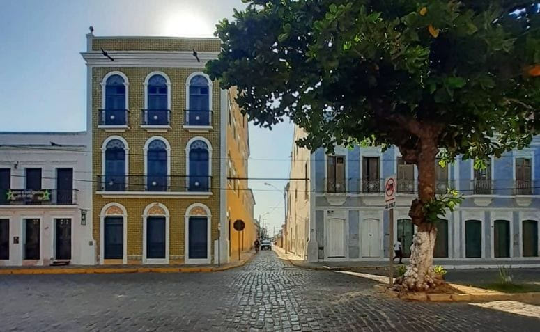

Centro Histórico de Aracati

O vilarejo de Aracati guarda, na sua memória, um traço marcante do seu passado, que são suas construções e seus monumentos arquitetônicos.
Pelas ruas, é possível ver várias casinhas coloridas e prédios tombados pelo IPHAN, além de museus, igrejas e restaurantes que são paradas obrigatórias.
Por isso, reserve um dia inteirinho para conhecer essa parte da cidade, que é encantadora e tem muito a nos ensinar.
Para saber mais sobre o centro Histórico acesse Saber Mais?
Museu Jaguaribano
O Museu Jaguaribano está localizado no centro histórico de Aracati e foi fundado em 1968.
Ele é uma ótima opção para ir com os amigos ou com a família. Logo ao chegar, você será recebido por um guia, que acompanha os visitantes durante o tour e conta um pouco da história da cidade.
Certamente, você vai adorar o atendimento e a riqueza cultural do local.
Veja no
mapa
como chegar ao museu
Praia de Canoa Quebrada

Canoa Quebrada é uma das praias mais famosas do Ceará e, por esse motivo, é uma das mais visitadas pelos turistas.
Embora muitas pessoas realizem um bate-volta de Fortaleza, o destino oferece muitas atrações que podem ser conhecidas em vários dias.
Nessa praia, é possível andar de buggy, ver o pôr do sol e fazer o passeio pela Rota das Falésias.
Sem dúvidas, sua experiência será incrível.
A cidade conta com outras excelentes praias Conheça as outras praias dessa região